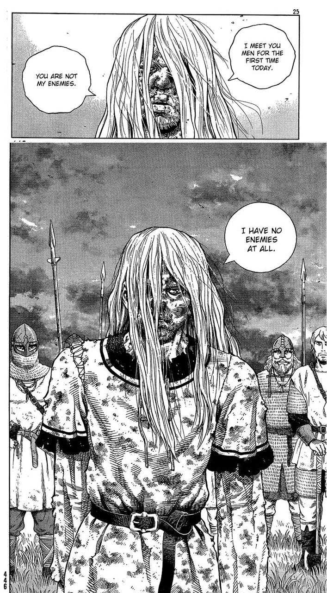

I have no enemies
September 29th, 2023
Bellevue, WA
This quote is from a Japanese manga called Vinland saga. In the story, the main character named Thorfinn experiences the harsh life of medival Europe in the early 11th century. Throughout the first half of the story, Thorfinn is motivated by anger and vengenance of the wrongs that have been done to him and his family. This leads to a brutal and violent life that begest even more tragedy and violence. In his world, everyone was an enemy.
From the beginning of the second half of the story, Thorfinn was a broken man. He begins to releases himself from the cycle of vengenance and begins his life anew. At one point in the story, he wanted to negotiate with the king and was confronted by the royal guards. They drew their swords and threatened him with violence. Thorfinn did not show any sign of hostility nor malice. He weathered both their insults and attacks. In the end they asked him, why he did not simply fight back, he could have easily defeated the man who challenged him. He simply responded, "I had just met these men today for the first time. I bear them no grudge. They are not my enemies. I have no enemies"
We are born without the concept of an enemy. Throughout our lives, we experience being wronged and those who would hurt us. They become our enemies. Thorfinn's philiosopy comes from a place where we do not label people in our lives as enemies. He does not bear hatred or angery towards anyone. To live like this is to be free of not only having enemies, but being someone's enemy in return. It is then that we can truely focus on the "true battle" of life. It isn't that we won't experience those who wish to wrong us in our lives, it is how we choose to perceive this that makes the difference.
I met you men for the first time today.
― Thorfinn
You are not my enemies.
I have no enemies at all.
References
From Wikipedia Vinland Saga (manga)
Youtube clip of the scene I Have No Enemies